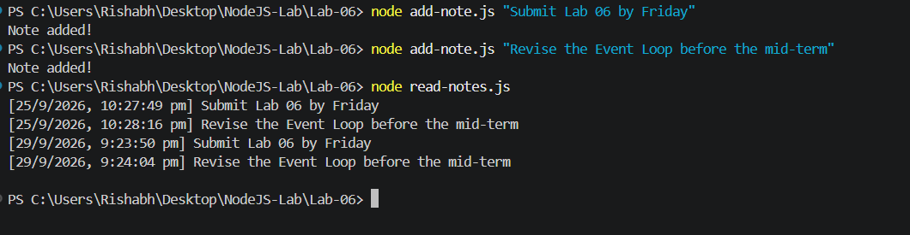

← Back to Explore Labs
LABORATORY 06

File System & CLI Notes
File-system operations, synchronous and asynchronous file handling and the command-line Notes App.
Outputs

Source Code
read-sync.js
const fs = require('fs');
const data = fs.readFileSync('sample.txt', 'utf8');
console.log(data);
console.log('This line runs AFTER the file has been fully read.');read-async.js
const fs = require('fs');
fs.readFile('sample.txt', 'utf8', (err, data) => {
if (err) {
console.error('Error reading file:', err.message);
return;
}
console.log(data);
});
console.log('This line runs BEFORE the file content is printed.');write-file.js
const fs = require('fs');
fs.writeFile('output.txt', 'This is my second message!', (err) => {
if (err) throw err;
console.log('File written successfully.');
});append-file.js
const fs = require('fs');
fs.appendFile('output.txt', '\nThis line was appended.', (err) => {
if (err) throw err;
console.log('Content appended successfully.');
});delete-file.js
const fs = require('fs');
fs.unlink('output.txt', (err) => {
if (err) throw err;
console.log('File deleted successfully.');
});add-note.js
const fs = require('fs');
const note = process.argv[2];
if (!note) {
console.log('Please provide a note. Example: node add-note.js "Buy groceries"');
process.exit(1);
}
const entry = `[${new Date().toLocaleString()}] ${note}\n`;
fs.appendFile('notes.txt', entry, (err) => {
if (err) throw err;
console.log('Note added!');
});read-notes.js
const fs = require('fs');
fs.readFile('notes.txt', 'utf8', (err, data) => {
if (err) {
console.log('No notes found yet.');
return;
}
console.log(data);
});